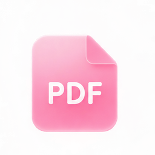
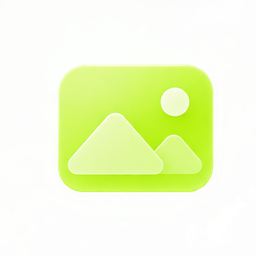

Welcome
☆Star工具箱☆
跨平台媒体播放与工具箱 · macOS / Windows / Linux
最近打开
还没有最近打开的文件。打开一个媒体文件即可在此快速访问。
快捷入口
媒体播放
常见格式（mp4/webm/mp3）在窗口内播放；mkv / flac / 外挂字幕 / 流媒体 / 硬解走系统 mpv 独立窗口。首次打开大码率 HEVC/AV1 视频可选后台转 720p 缓存。
未选择媒体文件
文档编辑
轻量文本 / Markdown 编辑，本地保存，不上传。复杂 Office 文档可用「系统打开」交给本机应用。
视频下载
调用系统 yt-dlp（检测中…）。Linux 安装：sudo apt install yt-dlp
下载目录中的媒体
文件工具
Excel 按 Sheet 拆分 / 合并
原生 OOXML 保真：字体 / 颜色 / 填充 / 数字格式 / 列宽 / 合并单元格零损，全离线。仅支持 xlsx / xlsm。

PDF 工具
按页拆分、多文件合并，基于 pdf-lib。

图片格式转换
用系统图片工具（ImageMagick）批量转换格式，不打包原生模块。
文本处理
去重、去空行、大小写、统计等，纯本地。